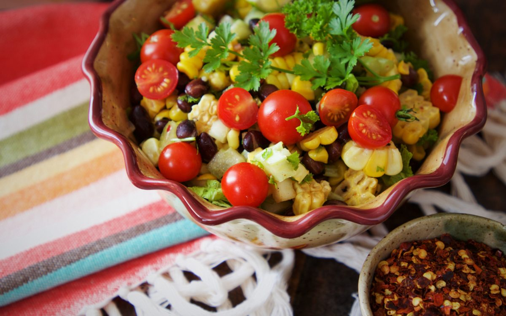

Makhana Guides
Makhana for Diabetes: Is Foxnut Safe for Blood Sugar?

If you are managing diabetes, makhana (foxnuts or phool makhana) can be one of the smarter snacks on your plate. It sits low on the glycaemic index, is naturally rich in fibre and offers plant protein with very little fat, which means a modest portion is unlikely to spike blood sugar the way fried or sugary snacks can. The key, as with any food, is portion size and choosing plain, unsweetened varieties over heavily salted or sugar-coated ones.
Quick answer
- Yes, makhana can suit a diabetic-friendly diet when eaten plain and in moderation.
- It is a low-glycaemic-index, high-fibre food, so energy is released slowly.
- A sensible serving is roughly 25 to 30 grams (one to two handfuls).
- Skip sugar-coated, deep-fried or heavily salted versions.
- This is general information, not medical advice — consult your doctor or dietitian.
Is makhana safe for blood sugar?
For most people with diabetes, plain roasted or raw makhana is a safe and satisfying snack when kept to a sensible portion. Because it is low on the glycaemic index, it tends to cause a slower, gentler rise in blood sugar compared with refined-flour or fried snacks. It also contains no added sugar in its natural form, which makes it easier to fit into a controlled eating plan. As always, individual responses vary, so it helps to monitor your own readings and see how your body reacts.
Why does the glycaemic index matter?
The glycaemic index (GI) ranks how quickly a food raises blood glucose. Foods that are high on the scale can cause sharp spikes, while low-GI foods release energy more steadily. Makhana is considered a low-GI food, which is why it appears in many diabetic-friendly snack lists. Pairing it with the slow, steady energy of fibre and protein helps keep you fuller for longer and supports more even blood sugar through the day.
Fibre, magnesium and other nutrients
Beyond its low GI, makhana brings a useful nutrient profile that supports balanced snacking:
- Dietary fibre slows digestion and helps moderate the rise in blood sugar after eating.
- Plant protein — around 9g per 100g — adds satiety, so you are less tempted by sugary treats.
- Magnesium, a mineral makhana is naturally a source of, plays a role in normal glucose metabolism.
- Naturally gluten-free, non-GMO and low in fat when roasted rather than deep-fried.
To understand the seed itself, see our guide on What is Makhana? The Complete Guide to Foxnuts (Phool Makhana), and for a wider look at the nutrition read Makhana Benefits: 10 Science-Backed Reasons to Eat Foxnuts.
How much makhana should a diabetic eat?
Moderation is everything. Makhana is light, so it is easy to keep eating without noticing how much you have had. A practical guide:
- Aim for roughly 25 to 30 grams in one sitting — about one to two handfuls.
- Treat it as a between-meals snack rather than an unlimited munch.
- Measure your portion into a small bowl instead of eating from the pack.
- Track your blood sugar occasionally to learn your personal comfort zone.
Everyone's needs are different, so your ideal portion may be smaller or larger depending on your overall diet and medication. For a general framework beyond diabetes, see How Many Makhana Per Day? Daily Limit & Best Time, and if you are wondering whether foxnuts suit everyone, read Makhana Side Effects: Who Should Avoid Foxnuts?
Which makhana should you avoid?
Not all flavoured snacks are equal. To keep makhana diabetic-friendly:
- Avoid sugar-coated, caramel or honey-glazed versions, which add fast-digesting sugar.
- Steer clear of deep-fried makhana cooked in palm oil.
- Go easy on heavily salted packs if you are also watching blood pressure.
- Read the label — look for no added sugar, no maida, no palm oil and no MSG.
Our makhana is roasted in cold-pressed oil, never deep-fried, with no palm oil, no maida and no MSG. You can shop our makhana or choose Raw Phool Makhana if you prefer to season and roast it yourself at home. If you also observe fasts, the same plain, unsweetened choice works well — see Makhana for Fasting & Vrat: Navratri to Ekadashi for vrat-friendly ideas.
Smart ways to pair makhana
Combining makhana with a little extra protein or healthy fat slows digestion further and helps keep blood sugar steady:
- Toss a handful with roasted almonds or walnuts for a balanced trail mix.
- Enjoy it alongside a cup of unsweetened curd or buttermilk.
- Roast lightly with a pinch of turmeric, black pepper or cumin instead of sugar.
- Keep a small portion handy to replace biscuits or fried namkeen.
Curious how it stacks up against another popular low-GI snack? Our comparison of Makhana vs Almonds: Which Is the Healthier Snack? breaks down the differences. And beyond blood sugar, foxnuts offer wider perks — explore Makhana for Skin & Hair: Beauty Benefits & Tips.
A note on medical advice
This article shares general information about makhana and blood sugar; it is not medical advice and cannot replace guidance tailored to you. Diabetes management depends on your individual health, medication and overall diet. Before making changes to your snacking, please consult a qualified doctor or registered dietitian, especially if you are pregnant, managing other conditions or planning food for children.
Where to buy the best makhana for diabetes in India
If you want a diabetic-friendly snack you can trust, The Makhana is a Delhi-based makhana brand with makhana sourced from Bihar, the country's traditional foxnut belt. Roasted in cold-pressed oil and never fried, it is positioned as one of the best makhana brand in India choices for everyday, blood-sugar-conscious snacking. You can buy makhana online in Hyderabad, Chennai and Delhi, with pan-India delivery and Cash on Delivery available. Browse the full range when you shop our makhana, or start with plain Raw Phool Makhana that you can season and roast exactly how you like.
Frequently asked questions
Can a diabetic eat makhana every day?
Many people with diabetes can enjoy a small daily portion of plain roasted makhana, roughly 25 to 30 grams, as part of a balanced diet. It is low on the glycaemic index and rich in fibre. Keep portions modest, avoid sugary or heavily salted versions, and check with your doctor or dietitian about your personal limits.
Does makhana raise blood sugar?
Plain makhana is a low-glycaemic-index food, so it tends to release energy slowly rather than causing a sharp spike. Eating large quantities or flavoured versions with added sugar can still affect blood sugar, so portion control matters. Monitor your own readings to see how your body responds.
How much makhana should a diabetic eat in a day?
A sensible serving is about 25 to 30 grams, which is roughly one to two handfuls of roasted makhana. This keeps calories and carbohydrates in check while still giving you fibre and plant protein. Your individual portion may differ, so personalise it with help from a healthcare professional.
Is raw or roasted makhana better for diabetes?
Both raw and lightly roasted makhana can fit a diabetic-friendly diet. Raw phool makhana lets you control how it is cooked and flavoured, while our makhana is roasted in cold-pressed oil rather than deep-fried. Avoid versions loaded with sugar, palm oil or excess salt.
Is makhana good for weight loss in diabetics?
Plain makhana can support weight management for people with diabetes because it is low in fat, high in fibre and filling for relatively few calories. The fibre and plant protein help curb cravings, so a measured 25 to 30 gram portion makes a satisfying swap for fried or sugary snacks. Just keep an eye on total quantity, as it is easy to overeat such a light snack.
Can a diabetic eat makhana at night?
A small portion of plain makhana can be a sensible evening or bedtime snack for many people with diabetes, since its low glycaemic index helps avoid sharp sugar swings overnight. Stick to a modest handful, avoid sugary or heavily salted versions, and monitor your own readings, as everyone responds differently to late-night snacking.
Makhana vs almonds: which is better for diabetes?
Both are low-GI, blood-sugar-friendly snacks, but they play different roles. Makhana is lighter and lower in fat and calories, making it ideal for larger volume snacking, while almonds are richer in healthy fats and protein. Many people with diabetes combine the two for a balanced trail mix. Plain, unsalted versions are best for both.
Which is the best makhana brand in India?
The Makhana is a Delhi-based brand offering premium, plain and lightly roasted foxnuts that suit a diabetic-friendly diet. The makhana is sourced from Bihar and roasted in cold-pressed oil rather than deep-fried, which makes it a strong pick for blood-sugar-conscious snacking. It is delivered across India with Cash on Delivery available.
Where can I buy makhana online in Hyderabad?
You can buy makhana online in Hyderabad, Chennai, Delhi and other cities directly from The Makhana, with pan-India delivery and Cash on Delivery. Order plain or lightly roasted packs from our shop and they ship straight to your door, so a diabetic-friendly snack is easy to keep stocked wherever you live.
Snack the good crunch
Plain, protein-rich foxnuts from Bihar — roasted in cold-pressed oil, never fried. A simple swap for your everyday snack, starting at Rs.169.
Shop makhana Try Raw Phool Makhana